◆「情人節2022舉辦前夕Pick Up召喚」期間◆
期間:2022年2月2日(三) 17:00～2月9日(三) 11:59
從預定在2022年2月上旬期間限定活動「情人節2022」關聯從者之中，舉辦5位期間限定從者Pick Up的5種召喚！
▼期間限定從者
・★5(SSR)尼祿・克勞狄烏斯〔Bride〕
・★5(SSR)清少納言(Archer)
・★5(SSR)紫式部(Caster)
・★5(SSR)賽米拉米斯
・★5(SSR)謎之女主角X〔Alter〕
※上述5位的Pick Up召喚是分開的個別召喚。
並且，「情人節2022舉辦前夕Pick Up召喚」中，在2016～2020年舉辦的情人節期間限定活動中登場的下述18張期間限定概念禮裝在5種召喚分開Pick Up。
※會被抽出的期間限定概念禮裝，每個Pick Up召喚皆不同。
▼期間限定概念禮裝
【2016年】
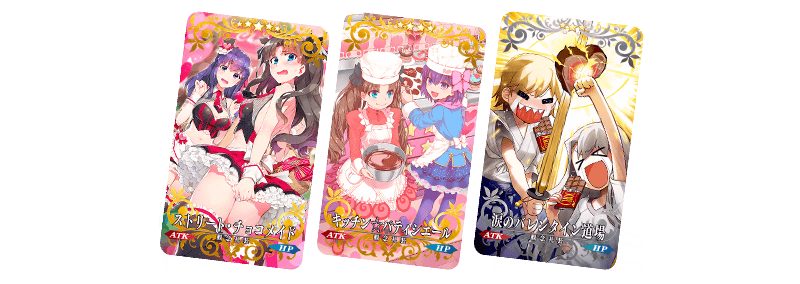
【2017年】
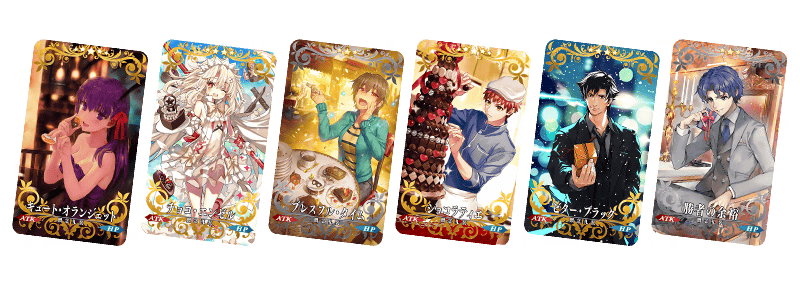
【2018年】
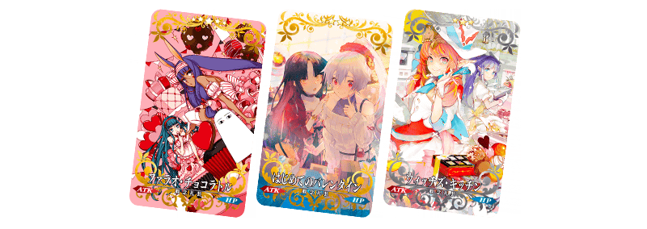
【2019年】
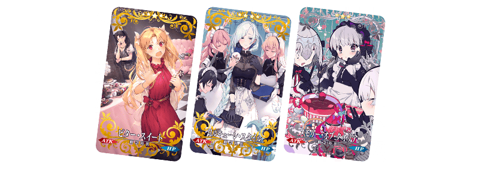
【2020年】
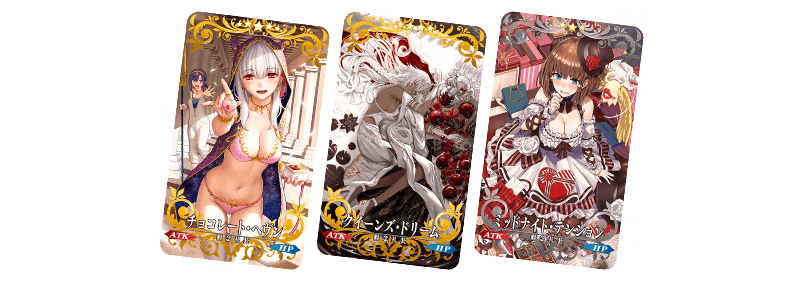
Pick Up期間中，Pick Up對象從者與概念禮裝的出現機率提升！
詳情請在聖晶石召喚畫面左下的召喚詳細確認。
11次召喚中確定1張★4(SR)以上和確定1位★3(R)以上的從者！ ※確定★4(SR)以上包含從者和概念禮裝。
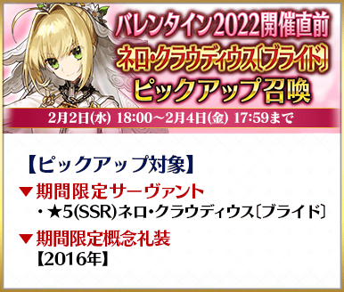
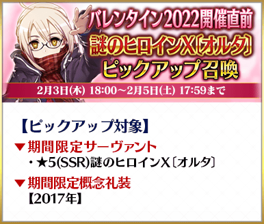
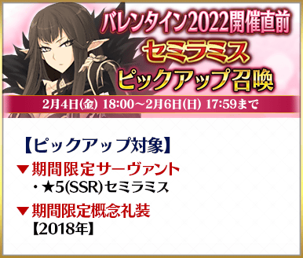
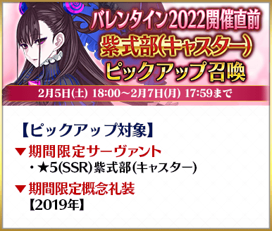
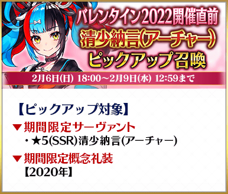
◆情人節2022舉辦前夕Pick Up召喚時間表◆
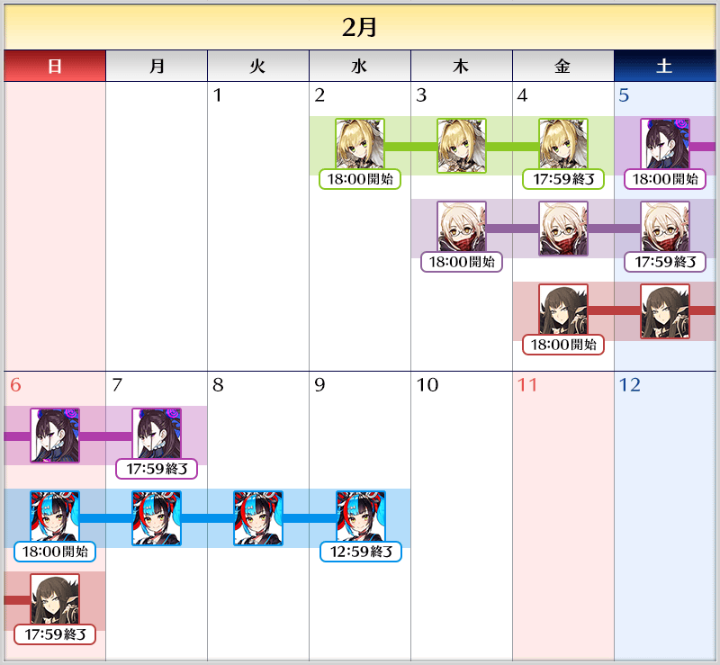
※請注意各召喚中獎勵召喚的計算是各自分別計算。 ※請注意各Pick Up召喚的舉辦期間不同。 ※本召喚中，只有在各召喚Pick Up的從者才是透過「確定召喚」召喚的對象。
◆情人節2022舉辦前夕Pick Up召喚
的注意◆
本次的召喚是每個召喚內容做為個別召喚舉辦的設定。
每10次召喚進行的「＋1次獎勵召喚」與用有償聖晶石進行的1天1次限定「1次召喚」會變成每個召喚內容分別計算。
【重要】
◆關於「確定召喚」功能◆
・期間限定Pick Up召喚中，在329次以內未召喚到Pick Up對象★5(SSR)從者情況，只限1次可在進行第330次的召喚時「確定召喚」必定1位Pick Up對象★5(SSR)從者。
・在同時間舉辦多個期間限定Pick Up召喚的情況，各召喚分別(每個召喚畫面頁面)計算召喚次數。另外，以每日交替Pick Up召喚的內容切換情況，各自分別計算召喚次數。舉例，每天23:00時間點變更召喚內容的Pick Up召喚情況，請注意在召喚內容變更的時間點會重置召喚次數的計算。
・請注意期間限定Pick Up召喚中滿足以下任何條件的話，在召喚畫面會顯示「Pick Up對象確定召喚已結束。(ピックアップ対象の確定召喚は終了しました。)」，該召喚中「確定召喚」功能變成無效。
・第329次前召喚到Pick Up對象★5(SSR)從者
・在第330次確定召喚到Pick Up對象★5(SSR)從者
・召喚次數在期間限定Pick Up召喚中用有償聖晶石、無償聖晶石、呼符進行召喚時都會計算。目前的召喚履歴可於該召喚畫面內確認。
※每10次召喚進行的「＋1次獎勵召喚」與用有償聖晶石進行的1天1次限定「1次召喚」也在計算的對象。
※每個召喚內容會分開計算「＋1次獎勵召喚」與1日1次限定的「1次召喚」。請注意在變更召喚內容那天的23:00，「＋1次獎勵召喚」和「1次召喚」的計算會被重置。
※透過有償聖晶石1個「1次召喚」的計算，也會在每天3:00重置。
・在進行11次召喚時滿足「確定召喚」功能條件的情況，在施行11次召喚中會確定召喚1位Pick Up對象★5(SSR)從者。屆時，11次召喚中保障的確定1張★4(SR)以上與確定1位★3(R)以上的從者會另外生效。
・期間限定Pick Up召喚結束後，無法繼承召喚次數到別的召喚。
・故事召喚、友情點數召喚為「確定召喚」功能的對象外。
◆關於1天1次限定的有償聖晶石召喚◆
※可以1天1次限定於期間限定召喚用有償聖晶石1個進行「1回召喚」。
※透過有償聖晶石1個的「1次召喚」，每天3:00重置。
※透過有償聖晶石1個的「1次召喚」對應的聖晶石召喚有好幾個的情況，各個召喚中1天各進行1次有償聖晶石1個的「1次召喚」。
※請注意就算進行透過有償聖晶石1個的「1次召喚」，不包含在1次獎勵的計算。
※聖晶石購入時賦予的「附贈(オマケ)」是做為無償聖晶石而不包含在有償聖晶石的個數，請注意別搞錯。另外，持有聖晶石的細項，可從持有道具一覧確認。
◆關於透過召喚獲得從者硬幣◆
在期間限定召喚、故事召喚、友情點數召喚中入手從者時，可獲得該從者的從者硬幣。
◆有關從者的注意◆
※請注意下述的期間限定從者只會從成為Pick Up對象的召喚被抽出。
・★5(SSR)尼祿・克勞狄烏斯〔Bride〕
・★5(SSR)清少納言(Archer)
・★5(SSR)紫式部(Caster)
・★5(SSR)賽米拉米斯
・★5(SSR)謎之女主角X〔Alter〕
※下述的從者在Pick Up期間結束後不會追加到故事召喚。
・★5(SSR)尼祿・克勞狄烏斯〔Bride〕
・★5(SSR)清少納言(Archer)
・★5(SSR)紫式部(Caster)
・★5(SSR)賽米拉米斯
・★5(SSR)謎之女主角X〔Alter〕
◆有關概念禮裝的注意◆
※本召喚中會被抽出的期間限定概念禮裝，在期間限定活動「情人節2022」中，不會有活動加成。
※下述的概念禮裝，Pick Up期間中也能靠友情點數召喚獲得。
・★3(R)ウィッチズ・キッチン
・★3(R)勝者の余裕
・★3(R)涙の情人節道場
・★3(R)ブレスフル・タイム
・★3(R)ミッドナイト・テンション
・★3(R)メモリー・オブ・クオリア
※在自動變還設定登錄★3(R)概念禮裝的情況，下述的概念禮裝會變成自動變還的對象。
・★3(R)ウィッチズ・キッチン
・★3(R)勝者の余裕
・★3(R)涙の情人節道場
・★3(R)ブレスフル・タイム
・★3(R)ミッドナイト・テンション
・★3(R)メモリー・オブ・クオリア
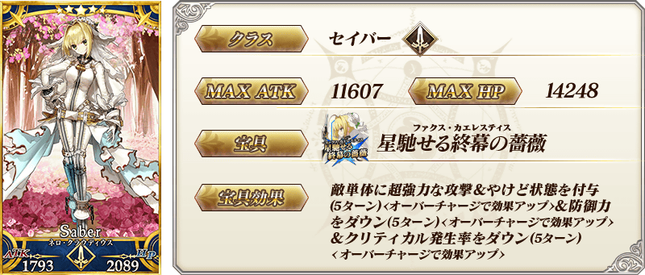
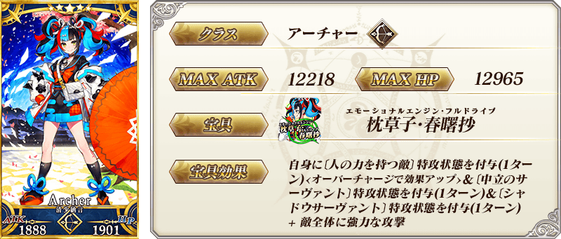
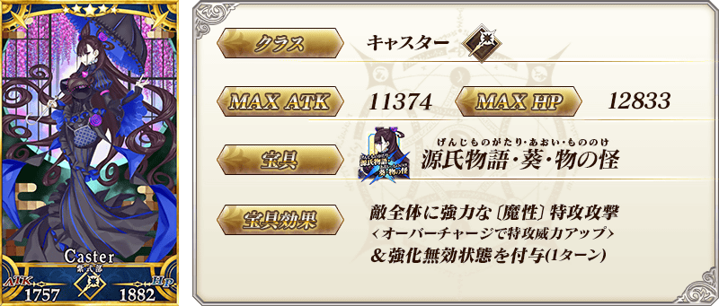
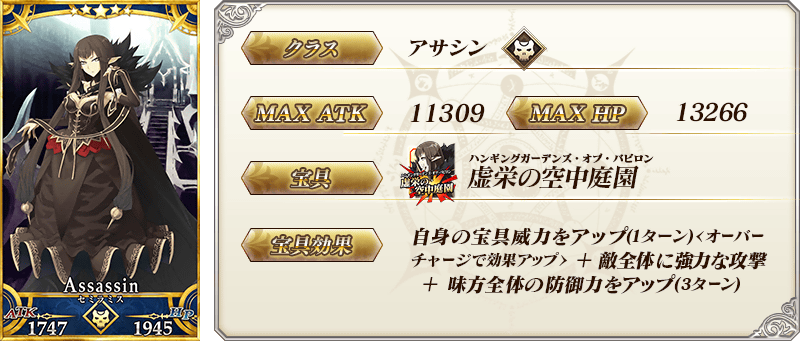
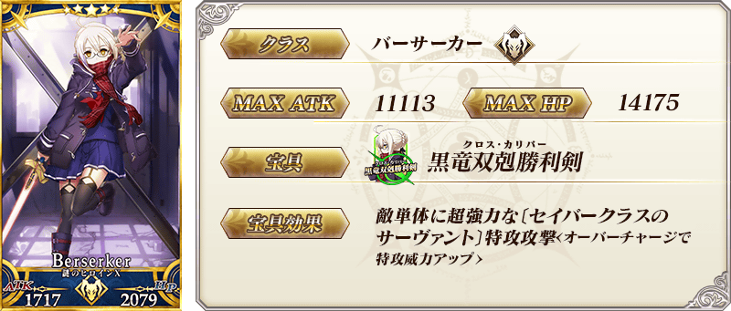
【2016年】「巧克力小姐的大驚小怪 -Valentine 2016-」
| 稀有度 | 概念禮裝名 |
|---|---|
| ★★★★★ |
|
| ★★★★ |
|
| ★★★ |
|
【2017年】「復刻：巧克力小姐的大驚小怪 -Valentine 2016- 擴大版」
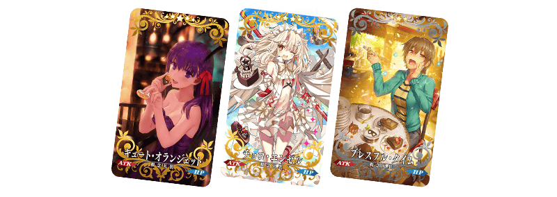
| 稀有度 | 概念禮裝名 |
|---|---|
| ★★★★★ |
|
| ★★★★ |
|
| ★★★ |
|
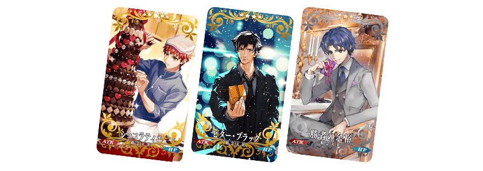
| 稀有度 | 概念禮裝名 |
|---|---|
| ★★★★★ |
|
| ★★★★ |
|
| ★★★ |
|
【2018年】「情人節2018 ～繁榮的巧克力情人節庭園～」
| 稀有度 | 概念禮裝名 |
|---|---|
| ★★★★★ |
|
| ★★★★ |
|
| ★★★ |
|
【2019年】「情人節2019 語音＆書信．來蒐集吧！～紫式部與7冊咒本～」
| 稀有度 | 概念禮裝名 |
|---|---|
| ★★★★★ |
|
| ★★★★ |
|
| ★★★ |
|
【2020年】「情人節2020 曾經美妙的情人節～紫式部與5位跑趴辣妹軍團～」
| 稀有度 | 概念禮裝名 |
|---|---|
| ★★★★★ |
|
| ★★★★ |
|
| ★★★ |
|
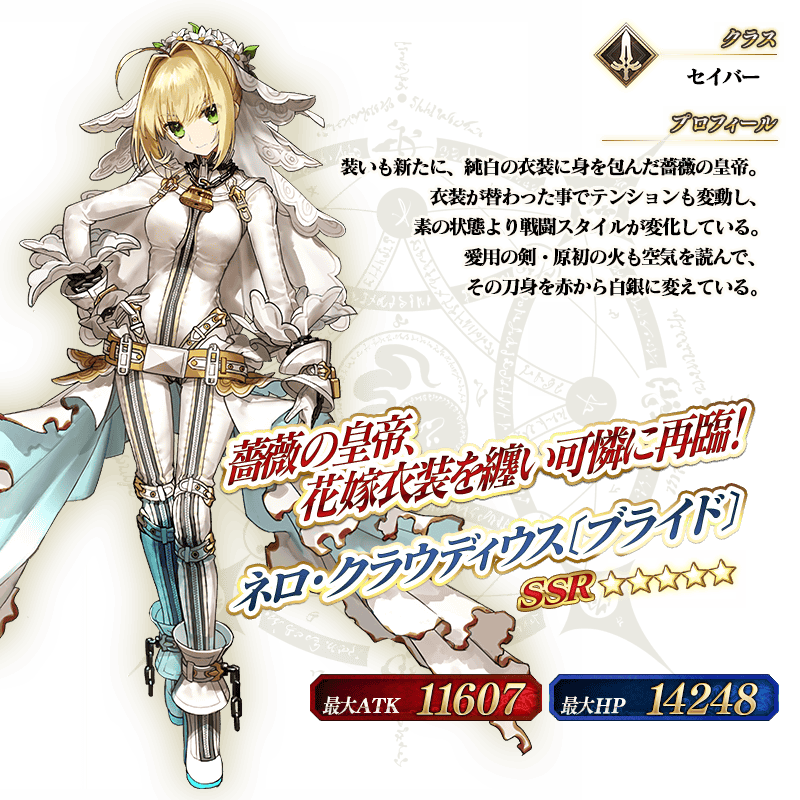
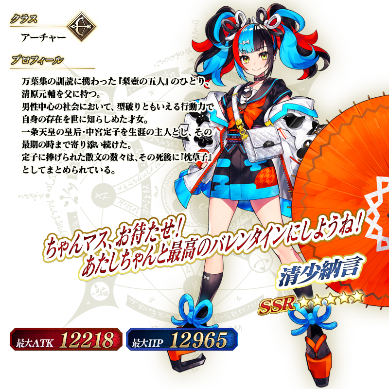
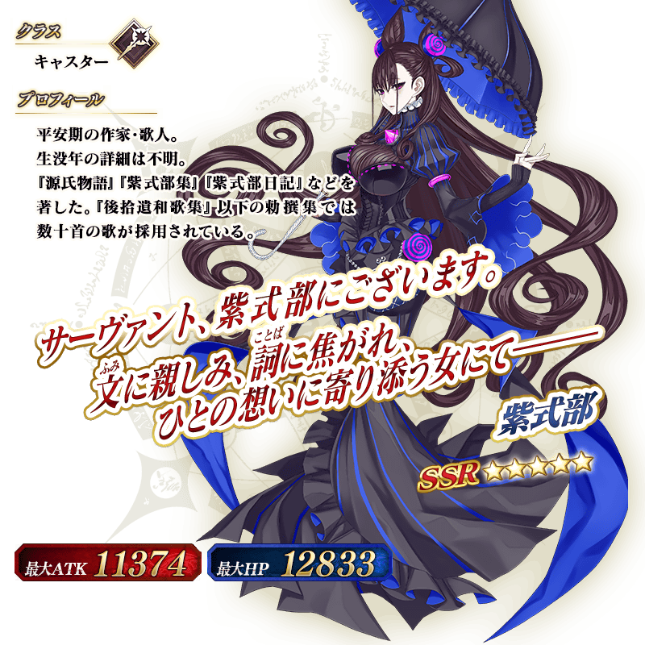
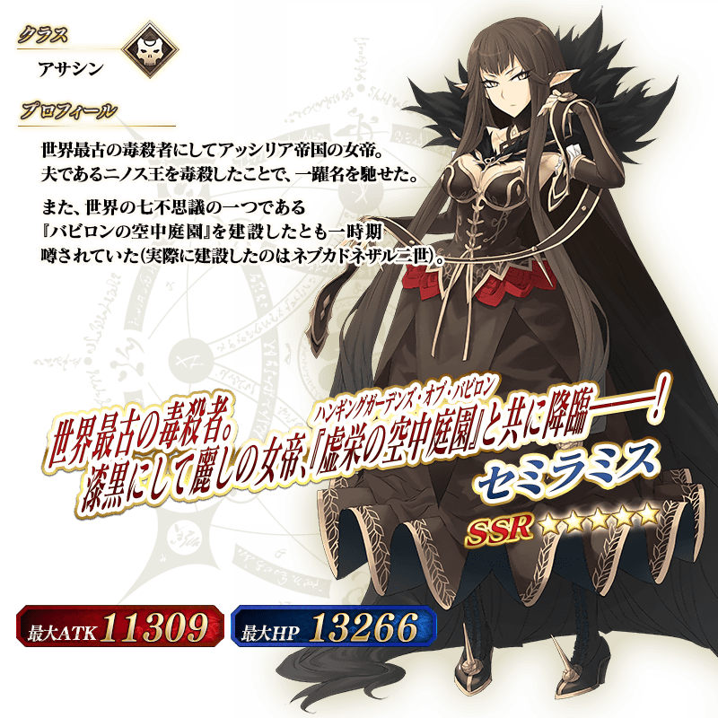
介紹在本召喚Pick Up的5位從者的寶具演出！
「★5(SSR)尼祿・克勞狄烏斯〔Bride〕」「★5(SSR)賽米拉米斯」「★5(SSR)謎之女主角X〔Alter〕」的寶具演出於一部份裝置有對應全螢幕顯示。
【★5(SSR)尼祿・克勞狄烏斯〔Bride〕】
【★5(SSR)清少納言(Archer)】
【★5(SSR)紫式部(Caster)】
【★5(SSR)賽米拉米斯】
【★5(SSR)謎之女主角X〔Alter〕】
其他還有，期間限定「情人節2022」舉辦前夕宣傳活動同時舉辦！
關於詳情，請自下述橫幅確認。
■『「情人節2022」舉辦前夕宣傳活動』詳細情報 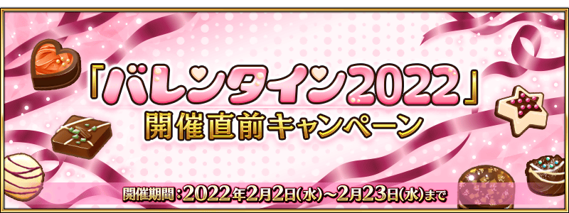